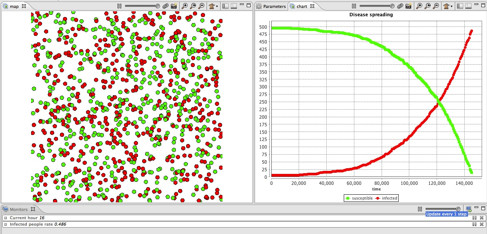

This step Illustrates how define monitors and charts in GAMA. In addition, it illustrates how to define a stopping condition for the simulation.

In order to define dynamic variable able to update itself, we use the update facet of variable definition. Indeed, at each simulation step, all the agents (and the world agent) apply for each dynamic variable (in their definition order) its update expression. We define 4 new variables:
global{
...
int current_hour update: (cycle / 60) mod 24;
int nb_people_infected <- nb_infected_init update: people count (each.is_infected);
int nb_people_not_infected <- nb_people - nb_infected_init update: nb_people - nb_people_infected;
float infected_rate update: nb_people_infected/nb_people;
...
}
We add a new reflex that stops the simulation if the infected_rate is equal to 1. To stop the simulation, we apply the halt action.
global {
...
reflex end_simulation when: infected_rate = 1.0 {
do halt;
}
}
Note that it would have been possible to use the pause action that pauses the simulation instead of the halt action that stops the simulation.
A monitor allows to follow the value of an arbitrary expression in GAML. It has to be defined in an output section. A monitor is defined as follows:
monitor monitor_name value: an_expression refresh:every(nb_steps);
With:
In this model, we define 2 monitors to follow the value of the variable current_hour and infected_rate:
experiment main_experiment type:gui{
...
output {
monitor "Current hour" value: current_hour;
monitor "Infected people rate" value: infected_rate;
...
}
}
GAMA can display various chart types:
A chart must be defined in a display : it behaves exactly like any other layer. Definition of a chart :
chart chart_name type: chart_type {
[data]
}
The data to draw are define inside the chart block:
data data_legend value: data_value
We add a new display called chart refresh every 10 simulation steps. Inside this display, we define a chart of type series:
experiment main_experiment type:gui{
...
output {
...
display chart refresh:every(10) {
chart "Disease spreading" type: series {
data "susceptible" value: nb_people_not_infected color: #green;
data "infected" value: nb_people_infected color: #red;
}
}
}
}
model SI_city
global{
int nb_people <- 500;
float step <- 1 #minutes;
geometry shape<-envelope(square(500 #m));
float infection_distance <- 2.0 #m;
float proba_infection <- 0.05;
int nb_infected_init <- 5;
int current_hour update: (cycle / 60) mod 24;
int nb_people_infected <- nb_infected_init update: people count (each.is_infected);
int nb_people_not_infected <- nb_people - nb_infected_init update: nb_people - nb_people_infected;
float infected_rate update: nb_people_infected/length(people);
init{
create people number:nb_people {
speed <- 5.0 #km/#h;
}
ask nb_infected_init among people {
is_infected <- true;
}
}
reflex end_simulation when: infected_rate = 1.0 {
do halt;
}
}
species people skills:[moving]{
bool is_infected <- false;
reflex move{
do wander;
}
reflex infect when: is_infected{
ask people at_distance infection_distance {
if flip(proba_infection) {
is_infected <- true;
}
}
}
aspect circle{
draw circle(5) color:is_infected ? #red : #green;
}
}
experiment main_experiment type:gui{
parameter "Infection distance" var: infection_distance;
parameter "Proba infection" var: proba_infection min: 0.0 max: 1.0;
parameter "Nb people infected at init" var: nb_infected_init ;
output {
monitor "Current hour" value: current_hour;
monitor "Infected people rate" value: infected_rate;
display map {
species people aspect:circle;
}
display chart refresh:every(10) {
chart "Disease spreading" type: series {
data "susceptible" value: nb_people_not_infected color: #green;
data "infected" value: nb_people_infected color: #red;
}
}
}
}